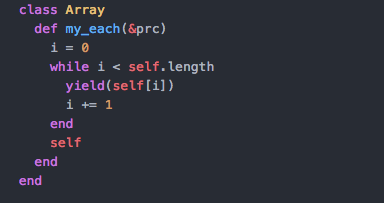
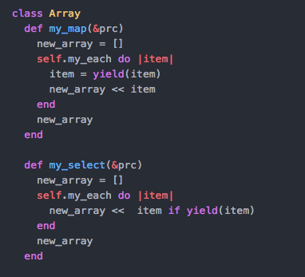

From-scratch methods
February 22, 2016

One of the things I've had to do on the road towards Ruby competency has been to write my own versions of array methods from scratch. I ended up reusing them quite often before I realized that the classes I was making could be subsumed into Array or Hash or whatnot as required...but at least I got lots of experience.
In order to write these, I had to think from a very different perspective: one of creation moreso than use. I had to think in terms of future use of this code, rather than trying to get it to produce something for me in the moment. That was a really interesting and important conceptual switchover for me, and I hope I keep it, because it feels more rigorous.
 It was a huge struggle to conceptualize how these methods worked under the hood, and I had to strengthen both my knowledge of Procs and self in order to do it.
Writing out #my_each was the biggest hurdle; after that, I could piggy-back off of it to write #my_each and #my_select methods.
Next hurdle will be to write out all the different kinds of sorting algorithms. Computer Science 101, but for me, it will probably be a revelation.